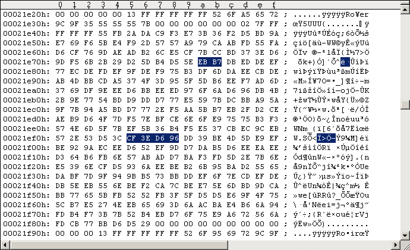
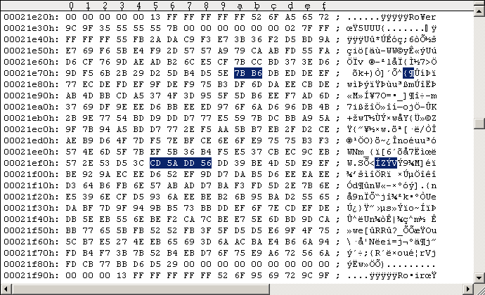

RapidLok1 Notes v1.0
(C) 2007-2011 BanGuiBob .o ooooo o888 ooooooooo. `888' 888 Welcome to this RapidLok1 notes. `888 `Y88. 888 888 RapidLok is a copy protection for 888 .d88' 888 888 diskette games on the Commodore C64 888ooo88P' 888 888 back in the 1980s and early 1990s. 888`88b. 888 o o888o There exist several versions of 888 `88b. o888ooooood8 RapidLok, counted from v1 to v7. o888o o888o You will find here a list of known RapidLok1 protected software titles and how to get the protected G64 images working in WinVice emulator. Keep in mind that "True drive emulation" must be enabled in WinVice when dealing with RapidLok protected G64 files. The included patches remove the whole RapidLok1 protection: the RapidLok track header integrity checks (i.e. sync lengths), track alignment, the track 36 handler, the key checks, and the track 36 key sector integrity check. There is only one exception: the off-byte check is still active -- the "12th header byte" must be the same for two successive $52 sector headers on track 18 and the value must be #$7B. Please refer to the RapidLok2 notes for details on remastering. The RapidLok6 handbook has information on how to create NIB/G64 images of original disks and structural information about tracks 1-35. PART 1: RapidLok1 patches PART 2: Software titles with RapidLok1 PART 3: Special notes on RapidLokPART 1: RapidLok1 patches
We start here with a short cut in the $0416 routine that directly calls the $0508 file transfer management ($042A-JSR). This bypasses the initial track 19 RL1 track header integrity check, the track alignment for tracks 20-29, the track 36 handler, the key checks for tracks 29-34, and the track 36 key sector integrity check. See following code snippets for the patch: --- ORIGINAL CODE #1 --------------------------- 0416: A9 03 LDA #$03 0418: 85 CA STA $CA ; [$CA]:=3, hi buffer pointer for file transfer 041A: 0A ASL A 041B: 85 BF STA $BF ; [$BF]:=6, index for storage of #7Bs 041D: A5 D6 LDA $D6 ; [$D6] set by "M-W", encrypted index into track selection record (not bit6) 041F: 49 55 EOR #$55 ; $55=0101.0101b 0421: 29 BF AND #$BF ; $BF=1011.1111b, mask out bit6 (selector bit for integrity checks & Track 36) 0423: 85 C2 STA $C2 ; [$C2]:= ([$D6] xor $55) and $BF, index into track selection record 0425: A9 0A LDA #$0A ; $0A=0000.1010b 0427: 8D 00 18 STA $1800 ; CLK=DATA=1/lo 042A: 20 88 04 JSR $0488 ; Integrity checks, read Track 36 Key Sector, run file transfer management ------------------------------------------------ --- PATCHED CODE #1 ---------------------------- 042A: 20 08 05 JSR $0508 ; Run file transfer management ------------------------------------------------ The $042A/$048E code is obviously located in the $04xx buffer which got read into memory by the $0300-B routine: Job #1, Track 18 Sector 9. This is a problem as the $0300-B routine uses the 3rd and 4th bytes from the final GCR sequence of the sector (sector parity) for decrypting [$039C-$07FF] ($0320-LDA, $0327-LDA). We have to make sure the original sector parity remains the same. We bypass the $0488 routine with the above patch, hence we can turn the $048E-BCS into a $048E-BIT correcting the sector parity with its argument: --- ORIGINAL CODE #2 --------------------------- 0488: 20 A6 06 JSR $06A6 ; Move head to Track 19 (from Track 18), set Bit rate. 048B: 20 48 04 JSR $0448 ; Check RL track header integrity, set/use [$C5]:=$32, CF:=1 if something wrong. 048E: B0 F6 BCS $0486 ; branch if error. Avoid this branch!!! ------------------------------------------------ --- PATCHED CODE #2 ---------------------------- 048E: 24 E3 BIT $E3 ; fix sector checksum / final GCR sequence ------------------------------------------------ The calculation is as follows. The 4 bytes we change ($042B/$042C/$048E/$048F) have the following "parity" (the decrypted bytes are used for this here): original: $88 xor $04 xor $B0 xor $F6 = $CA patched: $08 xor $05 xor $24 xor $.. = $29 Hence $29 xor $CA = $E3 is to be used for correcting the sector parity. Note on bypassing code: I could not find any dependencies on values of variables that were initialized or used by the bypassed code. As all RapidLok routines are encrypted on disk we have to encrypt all our patches before we apply them to the G64 images. The $0300-B routine decrypts the RapidLok code routines [$039C-$07FF]. Setting a memory breakpoint into the decryption loop (e.g.w 8:042A) reveals the original encrypted bytes, the bytes they get decrypted (xor'ed) with, and the decrypted plain code bytes: --- ORIGINAL DECRYPTION --------------------- 042A = |0E D4 BD| xor |2E 5C B9| = |20 88 04| 048E = |9E AA| xor |2E 5C| = |B0 F6| --------------------------------------------- --- MANIPULATED DECRYPTION ------------------ 042A = |0E 54 BC| xor |2E 5C B9| = |20 08 05| 048E = |0A BF| xor |2E 5C| = |24 E3| --------------------------------------------- The $042A/$048E code is obviously located in the $04xx buffer which got read into memory by the $0300-B routine: Job #1, Track 18 Sector 9. Applying the patches to the G64 images I always use the Maverick v5.04 GCR Editor (in WinVice) to "edit" the G64 images. Please refer to the RL6 handbook for instructions. Never save your modifications to disk/G64 from within the GCR Editor! Use "UltraEdit" in hex-mode instead to apply the changes directly to the G64 images (GCR code). The following Figure #1 shows the original Track 18 Sector 9 of a RapidLok1 G64 image, Figure #2 shows the modifications.
Figure #1: Original Track 18 Sector 9 of a RapidLok1 G64 image (disk side 1, NTSC).
Figure #2: Patched Track 18 Sector 9 ($042A/$048E patches).The patches here allow the removal of all $7B extra sectors and all $55 empty sectors from RapidLok protected disks (including their preceding sync marks). Only the $52 DOS reference header on each RapidLok formatted track, the RapidLok $75 sector headers, $6B data sectors and the DOS format sectors ($52 headers and $55 data sectors) are required anymore. All sync marks can be set to standard 5 bytes length.
PART 2: Software titles with RapidLok1
The following games are known to be protected with RapidLok1. This list may not be complete. Keep in mind that even if a title is listed below this does not necessarily mean all versions of it are protected with RapidLok1: There may exist versions with a different RapidLok version, a non-RapidLok protection or even none at all. Game Company TV type -------------------------------------------- Fight Night Accolade NTSC Law of the West Accolade NTSC Psi5 Trading Company Accolade NTSC Silent Service Microprose NTSC Notes: "Law of the West" PAL is RL2 protected. There is a "Fight Night" version with RL6. There is a "Fight Night" version without RapidLok. There is a "Silent Service" version with RL6. There are "Psi5 Trading Company" versions with RL2 and RL5. If you have other RapidLok1 protected titles, titles with different TV type than listed above or even listed titles without RapidLok protection and want to support me, then please send me the unmodified nib-dumps (with logfiles) of your original disk(s).PART 3: Special notes on RapidLok
There are PSI-5 Trading Co versions with RL1 (disk id "F1") and RL2 (disk id "F2"). PSI-5 Trading Co RL5 has disk id "F4", which indicates that it contains a later version of the game (see following statements). The "Psi-5 Trading Company" booklet has interesting statements from Accolade concerning different versions of RapidLok ("fast-loader", "protection software") and the game itself ( http://www.cerebus.de/psi5/words/docu/booklet.html#newTips ): DISK LOADING PROBLEMS (Commodore 64/128 users) BRAND OF DISK DRIVE: At present, Accolade's C64 product line only supports Commodore disk drives (i.e. 1541 & 1571). We cannot guarantee compatibility with other brands. We have a built-in "fast-loader" that can load programs over 10 times faster than a normal 1541 load. This, along with protection software, requires the internals of the disk drive to be very close to what a Commodore disk drive looks like. RANDOM BOOT PROBLEMS: We have found that a variety of problems can be caused by equipment being attached to your C64. We therefore recommend that all peripherals and cartridges (particularly "fast loaders") be removed from your C64 computer (except disk drive 8 joystick) prior to running any Accolade game. People are surprised to find out that just turning the power off to these devices is not enough. Accolade software utilizes all 64K of RAM in the system and uses memory configurations that differ from other game software. This tends to upset modems and printers and the like. DRIVE ALIGNMENT PROBLEMS: We have found out that our original "fast-loader" and protection system required 1541 and 1571 disk drive alignment to be in close adjustment. A weakness in Commodore's 1541 disk drive design (along with the fact that other companies' older protection schemes involved the stepper motor banging itself against the track zero stop) causes many disk drives to become out of alignment. Both Commodore and other companies have wised up, but it still leaves a lot of disk drives partially out of alignment. We have therefore improved our "fast-loader" software to be more forgiving. In the case of Psi-5, you can determine if you have the earlier loader by doing a diskette directory of the label side. If the volume-id is "F1" it is the early, less forgiving loader. You may purchase an updated version by sending $10.00 to Accolade with your written request (your warrantee card must be on file also). Of course the best long term solution is to get your disk drive aligned. QUIT-REPLAY PROBLEMS: We found out that there is a rather rare version of the Commodore G64 printed circuit board that has trouble performing the Psi-5 QUIT REPLAY SAME/NEW commands (screen goes black with no disk light & hangs). This is machine and not media dependent. The later disk releases of Psi-5 have found a way around this problem. You can determine if you have the earlier version by doing a diskette directory of the label side. If the volume-id is "F1" it is the early version. You may purchase an updated version by sending $10.00 to Accolade with your written request (your warrantee card must be on file also). --- end of article ---